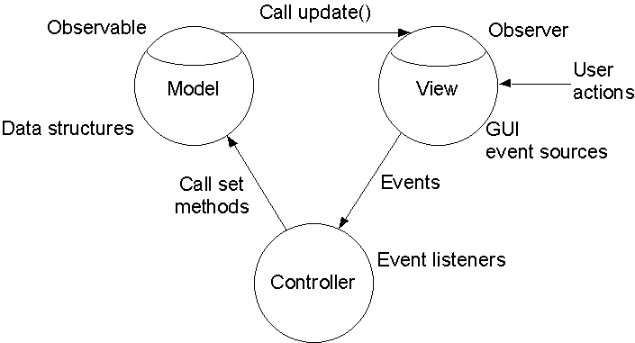

MVC, or Model-View-Controller, is a design paradigm that provides a useful separation of functionality and has been shown to produce effective GUI designs and to promote reusability.
This page tries to illustrate some of the issues around MVS by using as its example JabberPoint(tm), a simple slide-show program that has no relationship at all to Microsoft(r) PowerPoint(tm). N.B. This is not the full source code, but only the fragments needed to show the MVC architecture. If you want the full source code to compile or use, go to the course author's web site, http://www.darwinsys.com/, and follow the link to Free Software.
Just to remind you of what we said MVC stands for: 
In the following paragraphs we point out some key features of each.
Here is part of the Model, Model.java
The simplest view is a SlideShow view, which simply paints the current page in large letters. This View is a Component that can be imbedded in a Frame or Applet.
How does it know when to do so? Note the method update(). This is not the update method of AWT, but is part of the Observable interface. This update simply saves the data it was passed in as a Slide, and calls AWT's repaint, which will call the paint method a few lines below it in the listing.
But there can be more than one view. In a slide show program there are usually three: the slideshow (which we implement), and the Outline and Sorter (which we do not yet provide). Each of these would be a different view, and would be registered as an Observer for the Model as above. You would switch between them with a CardLayout or some kind of Tab Layout manager. Or, they could each be in a Frame; because they use Observable/Observer, when you updated the data in one window, it would immediately be updated in all of them!
The controllers are called when the user does something. Here is a nice simple controller, to give you the idea. The KeyController.java just responds to PageUp and PageDown (or Enter), and moves the current page up or down as appropriate.
It is "connected" with
frame.addKeyListener(new KeyController(model));
But a Controller does not have to be an explicit listener.
We might, for example,
use a MenuBar as a listener,
and connect it with the statement
frame.setMenuBar(new MenuController(view,model)); // and controller
after the instantiation of KeyController in our main program.
It then calls methods on the Model, such as nextPage().
This also means we can add additional functionality such as loadFile(). And, when we get around to writing the Editing part of this program, after the Year 2000 mess no longer generates employment :-), we can add methods like saveFile(), newFile(), etc., to the model, and call them from here.
One complication is that the MenuController needs may need access to the top-level Frame (just for purposes of Dialog creation), but the View is a component inside the Frame, and we don't wish to View to know too much about its environment. One way around this is to pass the Frame into the MenuController's Constructor; another is for the View to have a getFrame() method.
The Model, View and Controller are usually tied together with a Main Program; here is part of JabberPoint.java.
MVC can be more complex than this. For an extremely powerful (but wonderful!) example, see the JFC/Swing components JTable and TableDataModel. However, this presentation presents the basic idea.